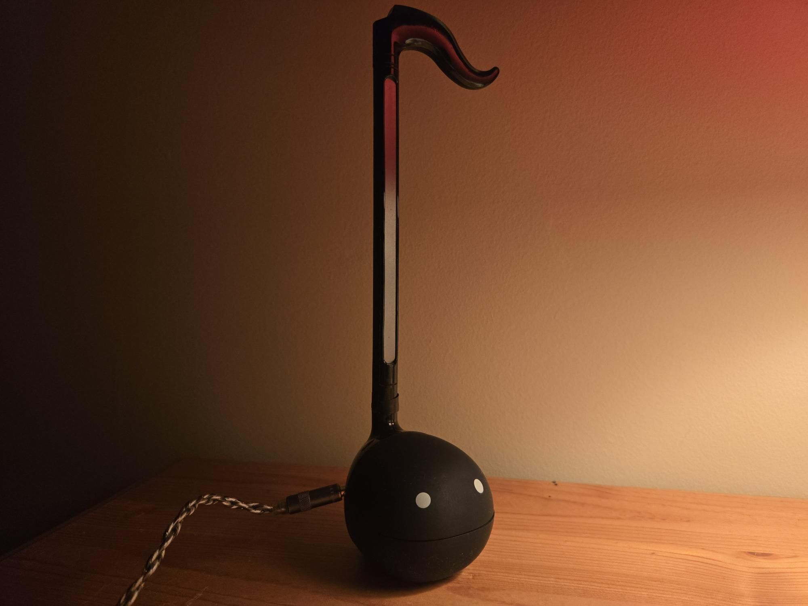
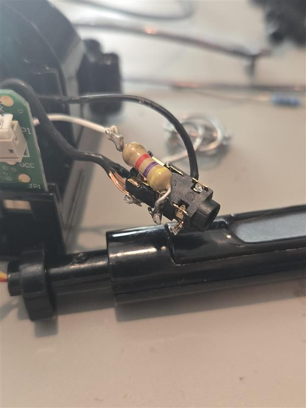
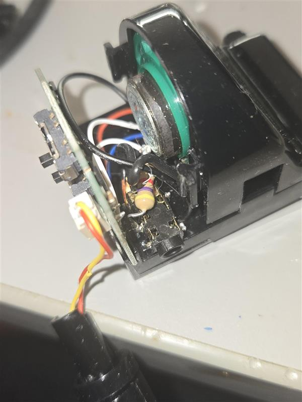
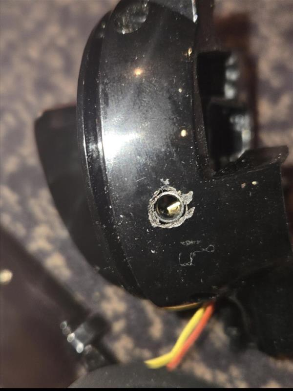
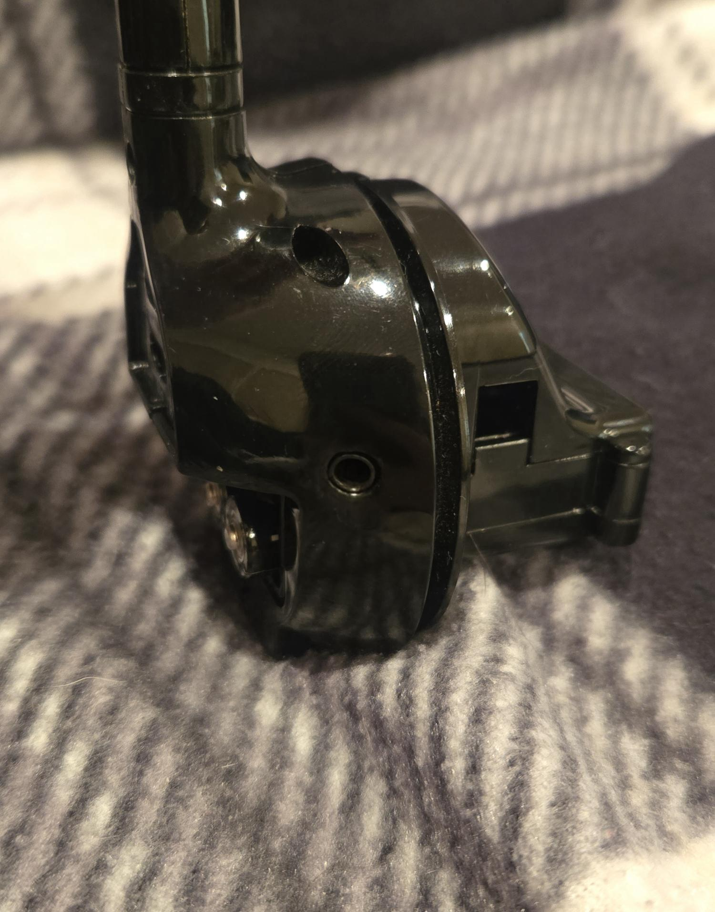

Otamatone with Aux

Despite being the form of a children's toy, the otamatone is a more-than-capable analog oscillator.
The base version wasn't meant for much more than fiddling around with novice tunes on the tiny touch
controller. Pressing it at different locations produces a different resistance to the internal circuit,
causing the pitch to change
The variable analog resistance across the fingerboard makes playing it similar to a violin; that would be the case if the note intervals weren't incredibly small, making any sort of reasonable note accuracy nearly impossible.
The company behind Otamatone does make a larger, more premium model. This model seems to be made with the intention of being a full fledged digital instrument: it has a much larger fingerboard with larger intervals, making it much easier to play melodies on it in tune. But most importantly, it contains an auxiliary audio output.
Proper signal processing can turn the sound of one instrument into virtually any other. This is the gist of how electric guitars work, where the guitar itself without any pedals or processing would sound like an acoustic guitar. Simply chaining the audio signal of the guitar with guitar pedals and other effects can get you many unique sounds.
I had received this Otamatone as a gift from my sister and I believe it is capable of everything the larger
version is, besides being a staggering height of almost twice the base model.
It should be
straightforward to add a 3.5mm jack to this Otamatone.
First I opened the Otamatone to see how it made sound. As I suspected, it used a 2 wire speaker.
The main challenge of this modification was to disable the speaker when the Otamatone was plugged in. I considered adding a physical switch to the Otamatone to toggle between speaker and aux output. However, after playing around with the headphone jack on the donor board, I noticed the jack itself had a little switch in it:

The tip of the 3.5mm male plug would open the circuit to the speaker.
After desoldering the jack off
the doner board, I wired the positive
terminal of the Otamatone to the tip of the headphone jack, which was connected to the switch.
Then I soldered the opposite side of the switch to the speaker. Before I soldered both the speaker and the headphone jack to ground, I added a resistor to the ground of the headphone jack. I didn't want the full power of the speaker output for the aux.
The Otamatone does not have a hole for a 3.5mm jack. I took a dremel to the side of the Otamatone casing, ensuring it would not run into the circuit board. Surprisingly, the Otamatone is incredibly hollow. There was more than enough room for my headphone jack, and possible other future modifications ( 👀 )
I was unhappy with how rough the opening was, so I wanted to smooth it out. Apparently the Otamatone is made of ABS plastic, so I had the idea of taking acetone to the rough edge as I've seen people do this to smooth out 3d prints.
This was unsuccessful, so I ended up buffing it out with the dremel.
After reassembling the Otamatone to test it, I was pleasantly surprised to see the headphone jack stayed firmly in place without glue. This is surprising as the jack withstands a lot of force with plugging and unplugging.
I am planning on making a full set of analog audio signal processing circuits, so the Otamatone will be the first oscillator chained with them.